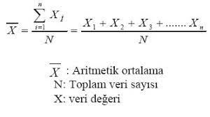
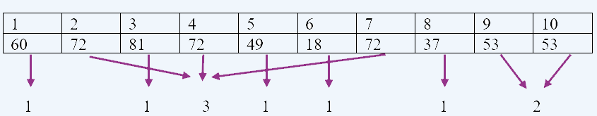
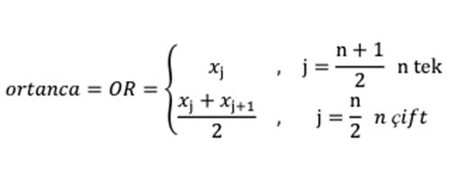
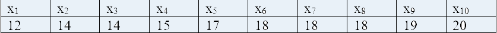
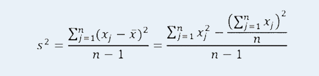
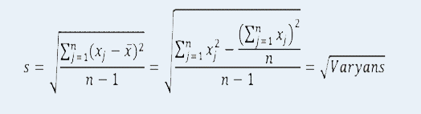
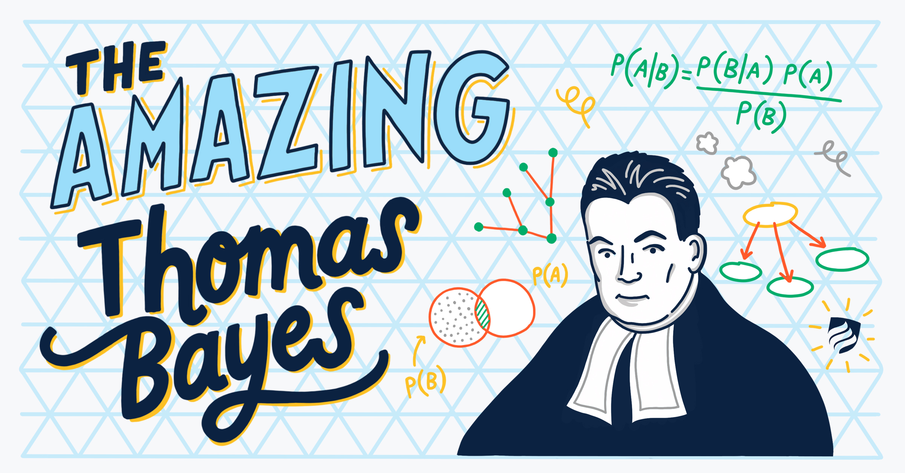
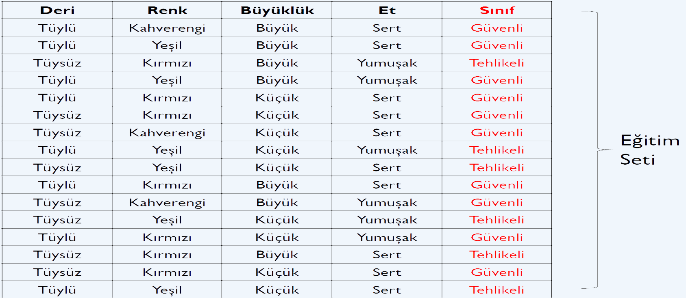
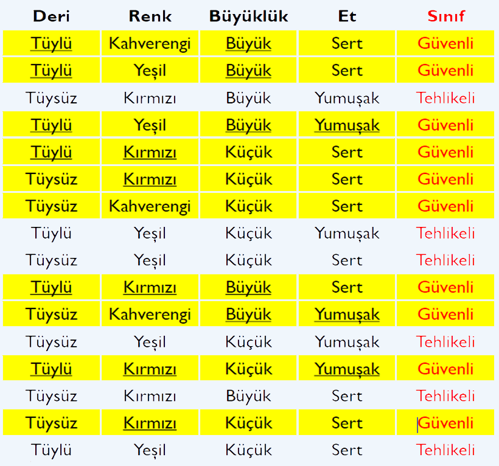

İSTATİSTİK NEDİR ?
İstatistik veya sayıtım, belirli bir amaç için veri toplama, tablo ve grafiklerle özetleme, sonuçları yorumlama, sonuçların güven derecelerini açıklama, örneklerden elde edilen sonuçları kitle için genelleme, özellikler arasındaki ilişkiyi araştırma, çeşitli konularda geleceğe ilişkin tahmin yapma, deney düzenleme ve gözlem ilkelerini kapsayan bir bilimdir. Belirli bir amaç için verilerin toplanması, sınıflandırılması, çözümlenmesi ve sonuçlarının yorumlanması esasına dayanır.
Ortalama
Aritmetik ortalama, en çok kullanılan merkezi eğilim ölçüsüdür. Birimlerin belirli bir değişken bakımından aldıkları değerlerin toplamının birim sayısına bölümü olarak tanımlanır. Eşit aralıklı ve oran ölçme düzeyinde ölçülen değişkenler için kullanılır.
Aritmetik ortalama hem kitle hem de örneklem için hesaplanır.

Mod
Bir veri grubunda en çok tekrarlanan değere tepe değer(mod) denir. Tepe değerin hesaplanmasında birimlerin büyüklük sırasına konulması şart değilse de, bu işlemin yapılması tepe değerin bulunmasında kolaylık sağlar.
ÖRNEK:
Yukarıda verilen tablo incelendiğinde 72 sayısı 3 kez tekrar ederek en çok tekrar eden sayı durumuna gelmiştir. Bu durumda Mod: 72 olur.
Medyan
Bir veri gurubundaki değerler küçükten büyüğe sıralandığında tam ortaya düşen değer ortanca değeridir. Kitledeki birimlerin sayısı çok fazla ise verilerin özetlenmesinde merkezi eğilim ölçüsü olarak ortanca kullanılabilir. Ortanca, sınıflama ölçme düzeyi ile ölçülen değişkenler için kullanılmaz. Eşit aralıklı, oran ve sıralama ölçme düzeyinde ölçülen değişkenler için kullanılır.

ÖRNEK:

Verilerin küçükten büyüğe sıralanmış hali yukarıdaki gibidir.
Veri sayısı n=10 çift olduğu için ortaya düşen iki değerin ortalaması ortanca olacaktır.
j = n/2 =10 / 2 = 5 ve j + 1 = 6 olmak üzere,
OR = ( x5 + x6 ) / 2 = (17 +18 ) / 2 = 17.5
Varyans ve Standart Sapma
Varyans, gözlem değerlerinin ortalamadan sapmalarının bir ölçüsüdür. Gözlem değerlerinden elde edildiğinden, örneklem varyansı olarak adlandırılır ve s2 ile gösterilir. Kitle varyansı a2 , örneklem varyansı s2 ile gösterilir.
Standart sapma varyansın kareköküdür. Kitle standart sapması a , örneklem standart sapması s ile gösterilir.
Varyans,
Standart Sapma,
eşitlikleri ile hesaplanır. Burada,
s: standart sapma
xj : j. denek değeri
x : aritmetik ortalama
n : birim sayısıdır.
Açıklık
Bir veri grubunda en büyük değer ile en küçük değer arasındaki farka değişim genişliği denir. R ile gösterilir.
R = En büyük değer – En küçük değer
Değişim genişliği, değişim aralığını gösteren bir dağılım ölçüsüdür. Değişim genişliğinin hesaplanmasında sadece iki uç değer işleme alındığından, diğer değerlerin hiçbir etkisi yoktur. Bu nedenle değişim genişliği yaygın olarak kullanılan bir dağılım ölçüsü değildir.
Olasılık Nedir?
Olasılık, basitçe, bir şeyin olmasının ne kadar olası olduğudur. Bir olayın sonucundan kesin olarak emin olmadığımızda, belirli sonuçların olasılıklarından yani bu sonuçların ne kadar olası olduklarından bahsedebiliriz. Olasılıkla açıklanan olayların analizine "istatistik" denir.
Evrensel Küme:
Çıktıların oluşturduğu kümeye evrensel küme denir. Evrensel kümeye her eleman 1 kez yazılır. KAHRAMANMARAŞ kelimesinin harflerini inceleyelim.
E=(K,A,H,R,M,N,Ş) s(E)=7
Örnek Uzay:
Bir deneyde gelebilecek çıktılar kümesine denir. Her bir çıktı ayrı ayrı yazılır.
Ö=(K,A,H,R,A,M,A,N,M,A,R,A,Ş)
Olay:
Örnek uzayın her bir alt kümesine bir olay denir. Yani olması istenen çıktıların kümesine denir.
K olma olayı (K) | 1 elemanlı
A olma olayı (A,A,A,A,A) | 5 elemanlı
Bağımlı Olaylar:
İki olaydan herhangi birinin gerçekleşmesi diğer olayın olma olasılığını değiştiriyorsa bu olaylara bağımlı olaylar denir.
Bağımsız Olaylar:
İki olaydan herhangi birinin gerçekleşmesi diğer olayın olma olasılığını değiştirmiyorsa bu olaylara bağımsız olaylar denir.
Tekli Olasılık
Kullanıcıdan alınan olaylar sayısının, olası sonuçlara bölümüdür
Bayes
Bayes Tarihçesi
Bayes Teoremi, 18. yüzyılda İngiliz Bakan ve matematikçi olan Thomas Bayes (1702 – 1761) tarafından öne sürülmüş ve özellikle geçtiğimiz son yarım yüzyılda önemi giderek daha fazla anlaşılmış bir teorem. Günümüzde Bayes teoremi fizikten kanser araştırmalarına, çevre bilimden psikolojiye kadar bir çok yerde kendine bir uygulama alanı bulmuş durumdadır.

model parametrelerinin sonsal dağılımlarını tahmin etmek için kullanılabilen Bayes istatistiklerine dayanan bir hesaplama yöntemleri sınıfını oluşturur
P(A|B) = B olayı gerçekleştiğinde A olayının gerçekleşme olasılığı
P(A) = A olayının gerçekleşme olasılığı
P(B|A) = A olayı gerçekleştiğinde B olayının gerçekleşme olasılığı
P(B) = B olayının gerçekleşme olasılığı

ÖRNEK:
Bir klinikte yapılan kanser testi gerçekte kanser olan hastaların %98’inde pozitif olarak sonuç veriyor. Bu test, gerçekte kanser olamayan hastaların %97’sinde negatif olarak sonuç veriyor. Ayrıca toplumdaki kişilerin 0.008’nin kanser olduğu biliniyor. Buna göre kanser testi pozitif çıkmış bir kişinin gerçekte kanser olma olasılığı nedir?
Verilenler:
𝑃(𝑘𝑎𝑛𝑠𝑒𝑟)=0.008 // kişi hakkında hiçbir bilgi yokken kişinin kanser olma olasılığı
𝑃(¬𝑘𝑎𝑛𝑠𝑒𝑟)=0.992
𝑃(𝑡𝑒𝑠𝑡𝑝𝑜𝑧𝑖𝑡𝑖𝑓|𝑘𝑎𝑛𝑠𝑒𝑟)=0.98 // kişi kanser iken testinin pozitif olma olasılığı
𝑃(𝑡𝑒𝑠𝑡𝑛𝑒𝑔𝑎𝑡𝑖𝑓|𝑘𝑎𝑛𝑠𝑒𝑟)=0.02
𝑃(𝑡𝑒𝑠𝑡𝑛𝑒𝑔𝑎𝑡𝑖𝑓|¬𝑘𝑎𝑛𝑠𝑒𝑟)=0.97//kişi kanser değilken testinin negatif çıkma olasılığı
𝑃(𝑡𝑒𝑠𝑡𝑝𝑜𝑧𝑖𝑡𝑖𝑓|¬𝑘𝑎𝑛𝑠𝑒𝑟)=0.03
İstenen:
𝑃(𝑘𝑎𝑛𝑠𝑒𝑟|𝑡𝑒𝑠𝑡𝑝𝑜𝑧𝑖𝑡𝑖𝑓)=?
Bayes teoremi ile:
𝑃(𝑘𝑎𝑛𝑠𝑒𝑟|𝑡𝑒𝑠𝑡𝑝𝑜𝑧𝑖𝑡𝑖𝑓) = ( 𝑃(𝑡𝑒𝑠𝑡𝑝𝑜𝑧𝑖𝑡𝑖𝑓 | 𝑘𝑎𝑛𝑠𝑒𝑟 ) × 𝑃(𝑘𝑎𝑛𝑠𝑒𝑟) ) / 𝑃(𝑡𝑒𝑠𝑡𝑝𝑜𝑧𝑖𝑡𝑖𝑓)
Burada bilmediğimiz şey 𝑃(𝑡𝑒𝑠𝑡𝑝𝑜𝑧𝑖𝑡𝑖𝑓). Yani kişinin kanser olup olmadığına bağlı olmaksızın testinin pozitif çıkma olasılığı.
Bir kişi ya kanserdir yada kanser değildir. O halde testin pozitif çıkması kanserli kişilerde ve kanser olmayan kişilerde görülür.
Bir kişinin kanser olması ve testinin pozitif çıkması: 𝑃(𝑡𝑒𝑠𝑡𝑝𝑜𝑧𝑖𝑡𝑖𝑓, 𝑘𝑎𝑛𝑠𝑒𝑟).
Bir kişinin kanser olmaması testinin pozitif çıkması: 𝑃(𝑡𝑒𝑠𝑡𝑝𝑜𝑧𝑖𝑡𝑖𝑓, ¬𝑘𝑎𝑛𝑠𝑒𝑟).
𝑃(𝑡𝑒𝑠𝑡𝑝𝑜𝑧𝑖𝑡𝑖𝑓) = 𝑃(𝑡𝑒𝑠𝑡𝑝𝑜𝑧𝑖𝑡𝑖𝑓, 𝑘𝑎𝑛𝑠𝑒𝑟) + 𝑃(𝑡𝑒𝑠𝑡𝑝𝑜𝑧𝑖𝑡𝑖𝑓, ¬𝑘𝑎𝑛𝑠𝑒𝑟)
=𝑃(𝑡𝑒𝑠𝑡𝑝𝑜𝑧𝑖𝑡𝑖𝑓 | 𝑘𝑎𝑛𝑠𝑒𝑟) × 𝑃(𝑘𝑎𝑛𝑠𝑒𝑟) + 𝑃(𝑡𝑒𝑠𝑡𝑝𝑜𝑧𝑖𝑡𝑖𝑓 | ¬𝑘𝑎𝑛𝑠𝑒𝑟) × 𝑃(¬𝑘𝑎𝑛𝑠𝑒𝑟)
=0.98×0.008+0.03×0.992 = 0.0376
𝑃(𝑘𝑎𝑛𝑠𝑒𝑟|𝑡𝑒𝑠𝑡𝑝𝑜𝑧𝑖𝑡𝑖𝑓) = (0.98×0.008) / 0.0376 = 0.2
Şu halde 𝑃( ¬𝑘𝑎𝑛𝑠𝑒𝑟|𝑡𝑒𝑠𝑡𝑝𝑜𝑧𝑖𝑡𝑖𝑓) = 1 − 0.2 = 0.8
Testi pozitif çıkan kişinin kanser olmama olasılığı çok daha yüksektir. O halde bu test pek güvenilir değildir!
Naive Bayes
Naive Bayes sınıflandırması olasılık ilkelerine göre tanımlanmış bir dizi hesaplama ile, sisteme sunulan verilerin sınıfını yani kategorisini tespit etmeyi amaçlar. Naive Bayes sınıflandırmasında sisteme belirli bir oranda öğretilmiş veri sunulur (Örn: 100 adet). Öğretim için sunulan verilerin mutlaka bir sınıfı/kategorisi bulunmalıdır. Öğretilmiş veriler üzerinde yapılan olasılık işlemleri ile, sisteme sunulan yeni test verileri, daha önce elde edilmiş olasılık değerlerine göre işletvilir ve verilen test verisinin hangi kategoride olduğu tespit edilmeye çalışılır. Elbette öğretilmiş veri sayısı ne kadar çok ise, test verisinin gerçek kategorisini tespit etmek o kadar kesin olabilmektedir. Naive Bayes sınıflandırma yönteminin birçok kullanım alanı bulunabilir fakat, burada neyin sınıflandırıldığından çok nasıl sınıflandırıldığı önemli. Yani öğretilecek veriler binary veya text veriler olabilir, burada veri tipinden ve ne olduğundan ziyade, bu veriler arasında nasıl bir oransal ilişki kurduğumuz önem kazanıyor.
ÖRNEK:

Elimizde bu eğitim seti varken ‘Tüylü, Kırmızı, Büyük, Yumuşak’ özelliklere sahip bir hayvanı yemek güvenli midir yoksa tehlikeli midir?
𝑃(𝑔ü𝑣𝑒𝑛𝑙𝑖|𝑡ü𝑦𝑙ü,𝑘𝚤𝑟𝑚𝚤𝑧𝚤,𝑏ü𝑦ü𝑘,𝑦𝑢𝑚𝑢ş𝑎𝑘) Vs 𝑃(𝑡𝑒ℎ𝑙𝑖𝑘𝑒𝑙𝑖|𝑡ü𝑦𝑙ü,𝑘𝚤𝑟𝑚𝚤𝑧𝚤,𝑏ü𝑦ü𝑘,𝑦𝑢𝑚𝑢ş𝑎𝑘)
𝑃𝑔ü𝑣𝑒𝑛𝑙𝑖𝑡ü𝑦𝑙ü,𝑘𝚤𝑟𝑚𝚤𝑧𝚤,𝑏ü𝑦ü𝑘,𝑦𝑢𝑚𝑢ş𝑎𝑘 ∝ 𝑃(𝑡ü𝑦𝑙ü,𝑘𝚤𝑟𝑚𝚤𝑧𝚤,𝑏ü𝑦ü𝑘,𝑦𝑢𝑚𝑢ş𝑎𝑘|𝑔ü𝑣𝑒𝑛𝑙𝑖)×𝑃(𝑔ü𝑣𝑒𝑛𝑙𝑖)
Eğitim setindeki 16 hayvandan 10’u güvenli sınıfındadır. O halde 𝑃𝑔ü𝑣𝑒𝑛𝑙𝑖=1016=0,62.
Şartlı bağımsız varsayımı sayesinde:
𝑃𝑡ü𝑦𝑙ü,𝑘𝚤𝑟𝑚𝚤𝑧𝚤,𝑏ü𝑦ü𝑘,𝑦𝑢𝑚𝑢ş𝑎𝑘𝑔ü𝑣𝑒𝑛𝑙𝑖=
=𝑃(𝑡ü𝑦𝑙ü|𝑔ü𝑣𝑒𝑛𝑙𝑖)×𝑃(𝑘𝚤𝑟𝑚𝚤𝑧𝚤|𝑔ü𝑣𝑒𝑛𝑙𝑖)×𝑃(𝑏ü𝑦ü𝑘|𝑔ü𝑣𝑒𝑛𝑙𝑖)×𝑃(𝑦𝑢𝑚𝑢ş𝑎𝑘|𝑔ü𝑣𝑒𝑛𝑙𝑖)

Güvenli sınıfındaki 10 hayvandan 6’sı tüylüdür.
𝑃(𝑡ü𝑦𝑙ü|𝑔ü𝑣𝑒𝑛𝑙𝑖)=6/10=0,6.
Güvenli sınıfındaki 10 hayvandan 5’i kırmızıdır.
𝑃(𝑘𝚤𝑟𝑚𝚤𝑧𝚤|𝑔ü𝑣𝑒𝑛𝑙𝑖)=5/10=0,5.
Güvenli sınıfındaki 10 hayvandan 5’i büyüktür.
𝑃(𝑏ü𝑦ü𝑘|𝑔ü𝑣𝑒𝑛𝑙𝑖)=5/10=0,5.
Güvenli sınıfındaki 10 hayvandan 3’ü yumuşaktır.
𝑃(𝑦𝑢𝑚𝑢ş𝑎𝑘|𝑔ü𝑣𝑒𝑛𝑙𝑖)=3/10=0,3.
𝑃𝑔ü𝑣𝑒𝑛𝑙𝑖𝑡ü𝑦𝑙ü,𝑘𝚤𝑟𝑚𝚤𝑧𝚤,𝑏ü𝑦ü𝑘,𝑦𝑢𝑚𝑢ş𝑎𝑘 ∝ 𝑃(𝑡ü𝑦𝑙ü|𝑔ü𝑣𝑒𝑛𝑙𝑖)×𝑃(𝑘𝚤𝑟𝑚𝚤𝑧𝚤|𝑔ü𝑣𝑒𝑛𝑙𝑖)×𝑃(𝑏ü𝑦ü𝑘|𝑔ü𝑣𝑒𝑛𝑙𝑖)×𝑃𝑦𝑢𝑚𝑢ş𝑎𝑘𝑔ü𝑣𝑒𝑛𝑙𝑖)×𝑃(𝑔ü𝑣𝑒𝑛𝑙𝑖)
=0,6×0,5×0,5×0,3×0,62=0,0279.
Benzer şekilde 𝑃𝑡𝑒ℎ𝑙𝑖𝑘𝑒𝑙𝑖𝑡ü𝑦𝑙ü,𝑘𝚤𝑟𝑚𝚤𝑧𝚤,𝑏ü𝑦ü𝑘,𝑦𝑢𝑚𝑢ş𝑎𝑘 ı hesaplayalım.
𝑃𝑡𝑒ℎ𝑙𝑖𝑘𝑒𝑙𝑖𝑡ü𝑦𝑙ü,𝑘𝚤𝑟𝑚𝚤𝑧𝚤,𝑏ü𝑦ü𝑘,𝑦𝑢𝑚𝑢ş𝑎𝑘 ∝ 𝑃(𝑡ü𝑦𝑙ü|𝑡𝑒ℎ𝑙𝑖𝑘𝑒𝑙𝑖)×𝑃(𝑘𝚤𝑟𝑚𝚤𝑧𝚤|𝑡𝑒ℎ𝑙𝑖𝑘𝑒𝑙𝑖)×𝑃(𝑏ü𝑦ü𝑘|𝑡𝑒ℎ𝑙𝑖𝑘𝑒𝑙𝑖)×𝑃𝑦𝑢𝑚𝑢ş𝑎𝑘𝑡𝑒ℎ𝑙𝑖𝑘𝑒𝑙𝑖×𝑃(𝑡𝑒ℎ𝑙𝑖𝑘𝑒𝑙𝑖)
=0,33×0,33×0,33×0,5×0,38=0,006.
𝑃(𝑔ü𝑣𝑒𝑛𝑙𝑖|𝑡ü𝑦𝑙ü,𝑘𝚤𝑟𝑚𝚤𝑧𝚤,𝑏ü𝑦ü𝑘,𝑦𝑢𝑚𝑢ş𝑎𝑘) > 𝑃(𝑡𝑒ℎ𝑙𝑖𝑘𝑒𝑙𝑖|𝑡ü𝑦𝑙ü,𝑘𝚤𝑟𝑚𝚤𝑧𝚤,𝑏ü𝑦ü𝑘,𝑦𝑢𝑚𝑢ş𝑎𝑘)
olduğundan test örneğini güvenli olarak sınıflandırırız. Yani ‘Tüylü, Kırmızı, Büyük, Yumuşak’ özelliklere sahip bir hayvanı yemek güvenlidir.
Seçiniz
Seçiniz
Tekli Olasılık
Ortalama
Mod Alma
Medyan
Standart Sapma